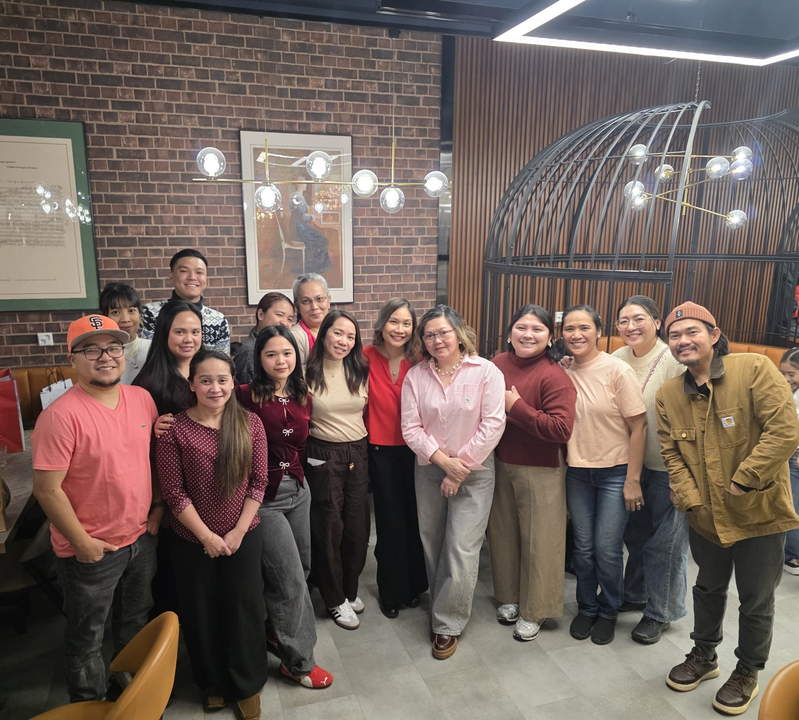

Kanlungan Oy is a reliable and flexible company that operates in the Helsinki Metropolitan Area in home care. We are a private healthcare service provider registered with the Regional State Administrative Agency and Valvira, as well as a provider of social and health services. The company has two owners, a nurse and a home health aide. Our customers are mainly elderly people living at home. The importance of home care for the client is at the heart of our operations. It is important to us that the client can participate in the decision-making of their own life and influence matters that concern them in their own home. It is great to bring services to people in their own homes! Their wishes and needs are taken into account individually. Kanlungan is a Filipino word that means safety and a place where everyone is like a family member. Our story began in April 2019, we founded Kanlungan to provide elder care and take care of those who have made the lives of our younger generations possible. We specialize in elderly care and take professional pride in caring for the elderly. In our hearts, we care for our clients as if they were our own family. Kanlungan's job is to care for the elderly like family members.
Our core values in home care are safety, trust, and commitment.
Our operating principles are the principles of humanity, safety, life management and mutual respect. Our principles are naturally intertwined in our work. Life management increases the feeling of security and security is formed by a reliable care relationship with a familiar caregiver. Humanity is present in every encounter and everyday chores. Safety is also concrete risk management and minimization. Humanity is equality and justice. Life management is the support of a dignified life despite the decline in functional capacity. Everyone has the right to participate in decision-making about their own life. Mutual respect is equal coexistence, in which the parties respect each other's individuality.
We monitor the quality of our work with regular customer feedback. We make necessary changes to ensure the quality of the service and are transparent in the development of our operations. Our self-monitoring plan is available on our website. We receive immediate feedback in every encounter with the customer.